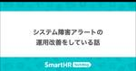
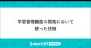
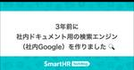

SmartHR Tech Blog
https://tech.smarthr.jp/
SmartHR 開発者ブログ
フィード
開発パフォーマンスを向上させるJira活用術
SmartHR Tech Blog
こんにちは！SmartHRで新機能開発を担当している、エンジニアのmuranoです。 新機能開発チームでは、開発効率向上の取り組みとしてJiraの活用を進めています。今回はJiraのデプロイ管理とサイクル期間レポートの活用ついて紹介します🐶 この記事を読んで、ぜひJira力を高めていきましょう。 デプロイ管理 Jiraのデプロイ機能を利用してJiraのチケットとデプロイを紐づけることで、トレーサビリティを向上できます。 チケット・スプリントごとにデプロイ状況が見えるようになり、「先週末にデプロイされていたのはここまでだね」などがすぐ分かったり、「あれ、このチケットはデプロイされましたっけ？」と…
6時間前

†ダークローンチ† 41
41
SmartHR Tech Blog
こんにちは、プログラマのkinoppydです。私の働いているプロダクト基盤チームでは、現在全プロダクト横断従業員検索システムを作成しており、旧システムとのリプレースを行っています。その際に我々が採用した、†ダークローンチ†という手法を皆さんにお伝えしますので、ぜひ参考にしてください。 ダークローンチのイメージ画像です ダークローンチとは？ ダークローンチとは、リリース手法の一つです。すでに稼働しているサービスのトラフィックをコピーして、新たにリリース予定のサービスに対してそのトラフィックを流し、レスポンスを記録しつつ破棄するという形のリリースです。すでに稼働しているサービスから見ると、トラフィ…
2日前
育休を取得したパパエンジニアのリアルな体験談！ 2
SmartHR Tech Blog
こんにちは、SmartHRプロダクトエンジニアをしているtkkrです。今年、子供が生まれたので育休を取って、最近復帰したのですが、ちょうど同じタイミングで育休から復帰した男性エンジニアが他にもいたので、せっかくなので弊社での育休に関してお話ししてみることにしました。この記事では、弊社のパパエンジニアたちが育休前後にどのように過ごしていたかの実体験をお届けします！ 参加メンバー紹介 wakasa 2015年にキヤノン株式会社へ入社し、監視カメラの販売管理業務に従事。2018年に株式会社ジラフに入社しエンジニア職に転向。その後、2019年5月にSmartHRへ入社し、SmartHRの本体機能の開発…
3日前

システム障害アラートの運用改善をしている話 1
SmartHR Tech Blog
こんにちは！ 人事評価機能を開発しているプロダクトエンジニアのnekoです。 現在、人事評価チームでは、システム障害アラートの運用改善を行っています。 今回は、現在の課題感や具体的な改善活動、目指す姿を紹介します。 現在の課題感 人事評価チームではSentryというエラーやパフォーマンスのモニタリングができるSaaSを利用しています。 エラーが発生するとSentryが検知し、Slackにエラーアラートとして投稿される仕組みです。 この仕組みをより良いものにするために、改善活動を行っています。 主な課題は以下の二点です。 アラートが多すぎる 運用が属人化している この課題を解決することで、エラー…
8日前

学習管理機能の開発において使った技術 3
SmartHR Tech Blog
はじめに こんにちは！ 学習管理機能を開発しているプロダクトエンジニアのs.miyoshiです。 少し前に弊社で学習管理機能をリリースいたしました。 学習管理機能のリリースにあたっていくつか工夫して実装したので、今回は学習管理に求められた機能をどのような技術を使って解決していったのかを紹介させてください。 開発要件 まずはじめに学習管理機能における主な要件です。 他にも細かい要件はありますが、特に重要だった要件です。 最大4GBの動画ファイルをアップロードできること 管理者が動画などのコンテンツファイルをアップロードする場合は正しく認証されている状態であること URLを知っている人であれば誰で…
9日前

3年前に社内ドキュメント用の検索エンジン（社内Google）を作りました 🔍 2
SmartHR Tech Blog
こんにちは、趣味でコーポレートエンジニアをやっていますyamashuです。 みなさん、社内ドキュメント管理ってどうしてますか？ これ、永遠に解決しない非常に難しい問題だと思っています。 どの製品を使うのか？ どのようなルールを作って管理していくのか？ そもそも誰が管理するのか？ どのようにナレッジを抽出するのか？ etc 今日はその中でも、ほしいドキュメントにたどり着けない課題（検索しても出てこない問題）を改善した過去話になります。 課題 🤔 弊社SmartHRは情報をオープンにすることを大切にしている会社です。 全従業員にあらゆる情報が見えるように、全従業員から日々情報がアウトプットされ蓄積…
11日前

3年前に勤怠打刻をSlackで完結できるようにしていました 🐢
SmartHR Tech Blog
こんにちは、趣味でコーポレートエンジニアをやっていますyamashuです。 タイトルの通りかなり昔の話になるのですが、勤怠打刻の課題解決についてそういえば社外へ向かってアウトプットしていなかったなと思い、この度したためている次第です。 社外と接点が多い営業の社員が弊社での打刻の方法をたまたまお話したりして、その話を聞いた会社様から「話を聞かせてほしい」とヒアリングをいただくことも最近まで何度かありました。 そのため、もしかしたら同じ悩みに直面している方がいらっしゃるかもしれないので、1つの解決策としてやったことを書いておこうと思います。 課題 🤔 勤怠管理SaaS（弊社だとAKASHI）を使っ…
14日前
SmartHRのOSS活動、登壇活動を盛り上げるべく、「OSSやっていきの集い」が立ち上がりました
SmartHR Tech Blog
こんにちは、プロダクトエンジニアのtnagatomiです。 SmartHRではこの度「OSSやっていきの集い」という活動を立ち上げました。私はその活動の運営メンバーの一人です。 このブログ記事では、この活動がどういった経緯で立ち上がり、何のために何をするのか、といったことをお伝えできればと思います。 これまでのSmartHRとOSS貢献、登壇活動 SmartHRではこれまで、OSSガイドラインを公開するなど、会社としてOSSへの貢献を後押ししようとしてきました。 テックブログでも、SmartHRのエンジニアが行ったOSS貢献を紹介してきました。 tech.smarthr.jp tech.sma…
16日前
第5回SmartHR LT大会を開催しました!
SmartHR Tech Blog
こんにちは。労務プロダクト開発本部で仕事をしているasonasです。 SmartHRでは定期的に社内でLT大会を行っています。2024年4月19日に開催された第5回目LT大会について紹介します。 過去のLT大会の記事は下記のリンクからどうぞ。 https://tech.smarthr.jp/archive/category/LT SmartHR LT大会とは DevRelのinaoさんを中心に定期的に開催している社内イベントです。第4回まではこれといったテーマは設定されていませんでしたが、第5回では「チーム自慢大会」がメインのテーマとして開催されました。 当日の様子 例によってinaoさんによ…
16日前
プロダクトオーナーはじめました〜何を作るか・なぜ作るかへの挑戦〜
SmartHR Tech Blog
こんにちは！SmartHR QAエンジニアのwattunです。 私事ですが、2024年7月から文書配付機能のプロダクトオーナー(以下、POと表記)に正式に就任できました。 今回はPOをやろうと思った理由や就任までの話をします。 POとは SmartHRでは、POはスクラムチームにおける役割の1つです。スクラムチームから生み出されるプロダクトの価値の最大化に責任を持ちます。 SmartHRの職種の1つであるプロダクトマネージャー(以下、PMと表記)に求められることが近いためSmartHRではPMがPOをやることが多いですが、他の職種(ドメインエキスパートやプロダクトデザイナーなど)がPOを担当す…
17日前
「顧客理解」を深め、プロダクトの方向性を見極めるためにチームで行った取り組み
SmartHR Tech Blog
こんにちは！ SmartHR プロダクトエンジニアの @kiita です。 プロダクト開発に携わる方ならおそらく誰もが大事にしている「顧客理解」という言葉。 大事だということはわかっていても「ユーザーを理解するってどういうこと？」「理解するためにはどうすればいいの？」と聞かれたら、答えに詰まる方も多いのではないでしょうか。 正直なところ、以前の私にはまったく分かりませんでした。 しかし今では、そのような問いに（少しですが）自信を持って答えられるようになったと感じています。 これは、私が所属する「配置シミュレーション機能」開発チームでの素敵な取り組みを通じて起こった変化です。 すべては「チームの…
22日前
Alignment と Autonomy と Agility ── シリーズE調達 SmartHR VPリレー連載#3
SmartHR Tech Blog
こんにちは。VP of Engineering の森住です。 今回は SmartHR VP リレー連載ということで筆を執っておりまして、僕の回では Alignment（調整）と Autonomy（自律）と Agility（機敏性）の3つの観点から SmartHR 開発組織のこれまでとこれからをお伝えしていきます。なぜ英語表記にしているかというと、A が3つ並んで見た目がおもしろいなと思ったからです。深い理由はありません。 組織 組織を構築する理由の一つは、時間・空間を超えて、一人の人間の努力では達成できないような目標を達成することである。分業・調整・統合の結果である組織のアウトプットが、時間を…
23日前
エンジニア歓迎会の練習会の同窓会の練習会 in サイゼリヤをやりました
SmartHR Tech Blog
こんにちは。 SmartHRにて「CEO室」という、おそらく何をやっているのか最もよく分からないと思われている部署に所属している荒木と申します。 さて、今回は「エンジニア歓迎会の練習会の同窓会の練習会」のレポート記事となります。 「ん？なんか見覚えあるな？」と思った方もいるかもしれません。 それもそのはず。2018年に実施して話題になった「エンジニア歓迎会の練習会」から6年の時を経て突然生まれた続編企画となります。 読んだことないよ！という方がいればサッとでも良いので読んでいただけるとより楽しめると思うのでぜひお読みください！ tech.smarthr.jp 前回の企画、結局どうだった？ 改め…
23日前
RuboCop RSpecに新しいルールを作った話
SmartHR Tech Blog
こんにちは、プロダクトエンジニアのkitazawaです。 みなさんRuboCop使っていますか？静的コード解析でさまざまなチェックをしてくれて便利ですよね。 私が担当しているプロダクトでももちろん利用しており、とても活躍しています。 そんな便利なRuboCopですが、既存のルールだけではなく自分でルールを作ることもできます。 今回はルールを自作した話と、その作ったルールrubocop-rspecに取り込んでもらった話を紹介します。 間違ったテストコードの発見 ある日、コードを修正しているときにRSpecで以下のようなテストが書いてあることに気付きました。 it { expect(do_some…
24日前
HRアナリティクスをローンチするまでの開発体制で意識したこと3選
SmartHR Tech Blog
こんにちは、プロダクトエンジニアのceris（せりやん）です。 SmartHR は今年の 6 月に「HR アナリティクス」機能をリリースしました。 わーーー、めでたい。 プレスリリースも出ているのでぜひあわせてご覧ください。 収集した人事データを分析できる新機能「HRアナリティクス」を公開 | SmartHR｜シェアNo.1のクラウド人事労務ソフト 丹精込めて作ったプロダクトが世に出て、人に使っていただけるというのはとても気持ちがいいですね。 既にユーザー様からの要望やお問い合わせも頂いており、開発チームのメンバーもそれらを目にしながらより良いプロダクトに進化させようと日々モチベーションを高め…
1ヶ月前
続・最短距離で価値検証するために、開発生産性に向き合おうとしている話
SmartHR Tech Blog
人事評価の開発をしているプロダクトエンジニアのnomusonです。以前、最短距離で価値検証するために、開発生産性に向き合おうとしている話という記事で、変更のリードタイムや開発生産性フレームワークSPACEといった開発生産性の指標を計測して改善していこうとしていることを紹介しました。 今回はその続きとしての取り組みをお伝えします。 スクラムフェス大阪2024で発表しました！ 本題に入る前にご報告です！ 開発生産性の指標を計測して継続的改善を行ったこと、またSPACEの計測指標を定めていくアプローチについて、スクラムフェス大阪2024で発表しました！ speakerdeck.com 開発サイクルタ…
1ヶ月前
マルチプロダクト間データ連携への技術的挑戦
SmartHR Tech Blog
マルチプロダクト戦略の実現を目標として掲げ、急速にプロダクトを増やしているSmartHR。 そのような中、これまでプロダクトごとに分断されていたデータを相互に利用できるようにすることで、価値を高める試みが始まっています。この活動の中心となっているプロダクト連携ユニットに、現状と今後の展開を聞いてみました。 インタビューの様子。左：プロダクト連携ユニット 右：インタビュアー f440： それでは、プロダクト連携ユニットのインタビューを始めたいと思います。よろしくお願いいたします。 一同： よろしくお願いします。 f440： お時間を取っていただきありがとうございます。突然呼ばれてびっくりしている…
1ヶ月前
年末調整機能と過ごした7年間の軌跡
SmartHR Tech Blog
普段着用している年末調整Tシャツ。マル扶Tシャツは着すぎて文字がかすれている こんにちは。SmartHR プロダクトエンジニアの宮國(@gongoZ)です。 私は去る5月に誕生日を迎え、ついに40歳となりました。おめでとうございます！ SmartHR に入社したのは2017年9月、つまり33歳でした。時が過ぎるのは早いものです。 良い節目なので、今回は SmartHR で過ごした約7年間を振り返っていきたいと思います。 社内経歴 入社から現在までの、社内で携わってきた業務経歴を一枚絵に起こしてみました。 宮國の社内経歴。これまで3プロダクトに携わってきたが、在籍期間の4分の3が年末調整機能 入…
1ヶ月前
フルリモエンジニアのデスク環境!!劇的ビフォーアフター
SmartHR Tech Blog
ネタバレ防止のため写真なしアイキャッチにしました こんにちは、SmartHRの@nansekiです。 意外と知られていないのですが、SmartHRのプロダクトサイドはフルリモートOKで、多くの社員が自宅で仕事をしています。フルリモート勤務を支える制度*1には以下のようなものがあります。 リモートワーク環境を整える手当 入社時に25,000円支給 リモートワーク手当 毎月5,000円支給 フルリモート通勤制度 遠方居住者が所属オフィスに出社する交通費は、月2回まで通勤手当ではなく経費精算OK（金額上限なし） 今回はそんなフルリモートで働くエンジニアのデスク環境に迫ります。 コロナ禍で強制的にリモ…
1ヶ月前
「フルリモエンジニア Meetup in 関西 〜フルリモートで働いてる人・働きたい人、全員集合〜」を開催しました！
SmartHR Tech Blog
こんにちは、SmartHRの@nansekiです。 この記事は、6月21日に開催した「フルリモエンジニア Meetup in 関西 〜フルリモートで働いてる人・働きたい人、全員集合〜」のレポートです。この記事には技術的な内容は含まれませんのでご了承ください。 smarthr.connpass.com 開催背景 当日の様子 LT 懇親会 アンケートでいただいたコメント 感想と意気込みとおねがい 最後に 開催背景 SmartHRはエンジニアを含むプロダクトサイドの社員はフルリモートワークOKです。 しかしこれまで、オフラインイベントのほとんどを東京で開催してきました。社員が一番集中しているからとか…
1ヶ月前
キーボードへのこだわりを聞いてみた ── 人生の1/3の時間は打鍵！
SmartHR Tech Blog
こんにちは、プロダクトエンジニアの@ksaitoと@tafuです。 SmartHRには共通の趣味の方が集まるSlackチャンネルが数多く存在し、その一つに「#趣味_キーボード」チャンネルがあります。そこでは、新しいキーボードの情報共有や自作しました〜などのコミュニケーションが取られています。 今回は、仕事道具であるキーボードについて、こだわりのポイントや満足していない部分など、プロダクトエンジニアの@asonasさんにインタビューしてきました。 と、その前に我々のキーボードを軽く紹介させてください。 ksaitoのキーボード ksaitoが普段使っているキーボード TOFU60 を使っています…
1ヶ月前
スプリントプランニングの未来予測： 予言の書
SmartHR Tech Blog
こんにちは! SmartHR プロダクトエンジニアの @sakata と @hypermkt です。 SmartHRではほぼすべてのチームでスクラム開発を行っています。スプリントプランニングとスプリント進行中における課題に対し、私たちのチームでは「予言の書」という取り込みを行っています。本記事では、この「予言の書」の概要とその効果についてご紹介します。 予言の書が必要な背景 スクラム開発で、チームが消化できるキャパシティからタスクを選定したにも関わらず、すべてのタスクの消化ができなかったという経験はありませんか？ 私たちはたくさん経験したことがあります。そこにはスプリントプランニングにおける計…
2ヶ月前
React 19 で変わるアクセシビリティ周りの技術
SmartHR Tech Blog
こんにちは。アクセシビリティ本部のアクセシビリティエンジニアの五十嵐です。SmartHRでは主にアクセシビリティテスターが見つけた課題を技術的な観点から改善したり、根本的な問題を解決するための仕組みづくりを担当しています。 さて、Meta が開発する UI ライブラリとして長い間人気を博している React ですが、2024年4月に最新版であるバージョン 19 のRC版が公開されており、注目を集めています。 バージョン 19 では "use client" や "use server" でも知られる Server Components を含む様々な機能が含まれる予定ですが、この記事では、そんな…
2ヶ月前
キャリア台帳のE2EテストでPlaywrightを利用している話
SmartHR Tech Blog
こんにちは、SmartHRでキャリア台帳の開発を担当しているプロダクトエンジニアのhosoyaです。 今日は、私たちがどのようにPlaywrightを使ってキャリア台帳のE2Eテストを実装しているかについてお話しします。 なぜPlaywright？ E2Eの導入・運用の検討を始めた当時、SmartHRで運用されているE2Eは、Rspec x Selenium x Capybaraが主流でした。 キャリア台帳は新規プロダクトという事もあり、新しいツールの選定をしてもよいのではないかということでチーム内での検討がはじまりました。 採用理由に関しては以前紹介された「E2Eテストを Playwrigh…
2ヶ月前
SmartHRのRubyKaigi 2024の舞台裏
SmartHR Tech Blog
こんにちは、DevRelのinaoです。 RubyKaigiの会期中は、着替えのTシャツを1枚しか持って行ってなかった、名刺入れをポケットに入れたまま洗濯して名刺が四散した、熱々の沖縄そばを自分にぶっかけたなど、衣服まわりのトラブルに見舞われ続けました。どれも、原因が自分にしかないことがかなしいです。 この記事では、SmartHRがRubyKaigi 2024で行ったことの舞台裏をまとめます。 RubyKaigi 2024の会場となった那覇文化芸術劇場なはーと テーマ：「沖縄で握手！」 行った施策 体制 初参加者の方にも楽しんでいただきたい！ 実際の参加者層はどうだった？ 名札でつながる ──…
2ヶ月前
たのしいRubyKaigi ── 初参加なのにこんなことした！
SmartHR Tech Blog
こんにちは！SmartHRで基本機能を開発しているプロダクトエンジニアのeminemです。 先日、Rubyist6年目にして初めて念願のRubyKaigiに参加してきました！また、SmartHR社内の運営スタッフにも挑戦しました。 たくさんの貴重な、そして最高に楽しい経験をさせていただいたので、感じたことをざっくばらんにお話できればと思います。 RubyKaigi参加への想い RubyKaigiのことは数年前から風の噂で知っていました。 参加した方に話を聞くと、誰もが口を揃えて楽しかったと言っていて、ずっと羨ましいな〜と思っていました。 しかもなんと今年は沖縄！！！ということで、沖縄も行ったこ…
2ヶ月前
「RubyKaigi 2024事後勉強会 ── 思い出が止まらない」を開催しました
SmartHR Tech Blog
こんにちは！ SmartHR基本機能を開発しているプロダクトエンジニアのpndcatです。 RubyKaigiオーガナイザーや、SmartHRのRubyKaigi運営スタッフもしていました。 今回は「RubyKaigi 2024事後勉強会 ── 思い出が止まらない」を開催したので、その様子をお届けします。 事後勉強会のアイキャッチ また、「RubyKaigi 2024事前勉強会 ── 初参加でもこれで安心！」は以下の記事で紹介しておりますので、ぜひこちらも読んでいただけると嬉しいです。 tech.smarthr.jp 開催概要 5月31日にSmartHRで「RubyKaigi 2024事後勉強…
2ヶ月前
「RubyKaigi 2024事前勉強会 ── 初参加でもこれで安心！」を開催しました
SmartHR Tech Blog
こんにちは！ SmartHR基本機能を開発しているプロダクトエンジニアのpndcatです。 RubyKaigiオーガナイザーや、SmartHRのRubyKaigi運営スタッフもしていました。 今回は「RubyKaigi 2024事前勉強会 ── 初参加でもこれで安心！」を開催したので、その様子をお届けします。 事前勉強会のアイキャッチ また、「RubyKaigi 2024事後勉強会 ── 思い出が止まらない」は以下の記事で紹介しておりますので、ぜひこちらも読んでいただけると嬉しいです。 tech.smarthr.jp 開催概要 4月25日にSmartHRで「RubyKaigi 2024事前勉強…
2ヶ月前
RubyKaigi 2024参加レポート
SmartHR Tech Blog
こんにちは、SmartHRプロダクトエンジニアの@marietty、@neko、@mktakuya、@yorimitsuです。 SmartHRでは、那覇文化芸術劇場 なはーとで開催されたRubyKaigi 2024に約40名で現地参加しました。 Scheduler & Drinkup Sponsorをしました！ 今年は、Scheduler & Drinkup Sponsor として協賛しました。 公式スケジュールアプリのSchedule.selectを大幅にアップデート tech.smarthr.jp 昨年もたくさんの方にスケジュールアプリを利用していただきましたが、 今年はチーム機能とフレン…
2ヶ月前
アジャイルコーチングユニットを立ち上げ（て）ました
SmartHR Tech Blog
はじめに こんにちは。SmartHRでタレントマネジメントプロダクト開発組織のマネージャーをしている長田（shooen）です。 今は「アジャイルコーチングユニット」というユニットのチーフを兼任しているのですが、そういえばユニットを立ち上げたことを社外向けに伝えてなかったなと思い、今回はそのことについてお伝えしたいと思います。 アジャイルコーチングユニットって何？ 「アジャイルコーチングユニット」は2023年9月に発足しました。 メンバーは私と荒川（kouryou）さん2名のミニマム構成です。 2人とも元々エンジニアですが、今はスクラムマスターやアジャイルコーチとして、チームのパフォーマンス最大…
2ヶ月前